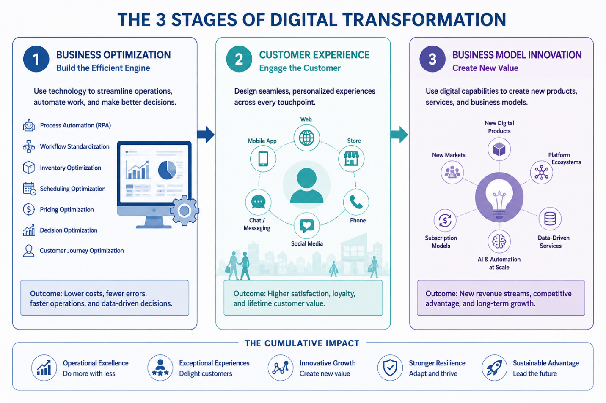
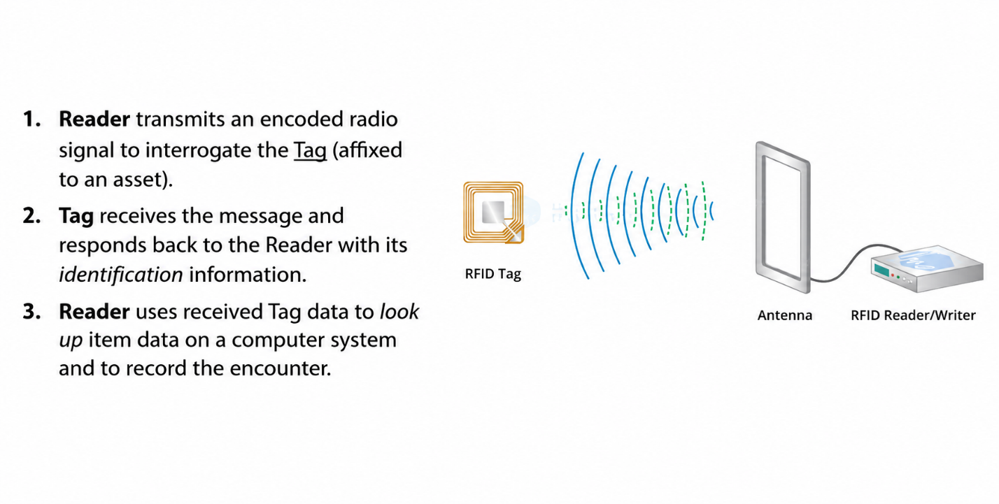

2.6.3 Digital Transformation: Re-engineering the Corporate DNA
The Mosh Pit in the Third Place: Why Technology Alone is Never Enough
On a chaotic morning in Chicago, a sea of hurried commuters spills from the train platform directly into a local Starbucks store.[1] Many of these customers have already completed their transactions minutes earlier, having placed their orders on their mobile devices while in transit.[1] They expect a seamless, friction-free handoff. Instead, they encounter what Starbucks founder Howard Schultz publicly criticized as a chaotic "mosh pit" at the pickup counter.[2] Baristas behind the counter are visibly overwhelmed, struggling to manage an onslaught of in-person, drive-thru, and digital orders that register in the kitchen system simultaneously.[2]
This operational bottleneck was not caused by a failure of technology, but rather by its runaway success. Starbucks pioneered mobile order-ahead capabilities, turning its application into the second most-used mobile payment platform in the United States, trailing only Apple Pay.[2] By 2024, morning mobile orders accounted for more than 60% of the company's total transactions.[3] Yet, because the physical workflow of the stores had not been reconfigured to handle this invisible digital queue, wait times skyrocketed.[2] Data from retail consultants revealed that roughly 8% of customers faced wait times of 15 to 30 minutes for a single beverage—a delay virtually unheard of in pre-pandemic operations.[2] The result was disastrous: a mid-teens percentage of users initiated orders on the application but abandoned them before checking out, contributing to a sharp decline in active loyalty program members and a subsequent drop in comparable store sales.[2]
The Starbucks dilemma illustrates a fundamental truth of modern information systems: a digital interface is only as robust as the physical operations supporting it. When the company hired turnaround specialist Brian Niccol as chief executive officer in late 2024, the strategic focus shifted from hyper-automated, purely transactional growth back to operational simplicity and human connection.[4] To dismantle the pickup counter mosh pit, Niccol's administration launched the Siren Craft System.[4] Rather than relying on capital-intensive hardware overhauls, this system deployed dynamic sequencing software.[4] This algorithm coordinates the physical preparation times of beverages, better timing mobile versus in-store orders so that baristas can manage throughput without being blindsided by a wall of digital tickets.[4]
| Operational Metric | Pre-Siren Craft System Era (2024) | Post-Siren Craft System Era (2025-2026) |
|---|---|---|
| Primary Order Source | Fragmented mobile, drive-thru, and walk-in queues [2] | Integrated via dynamic sequencing software [4] |
| Pickup Counter Vibe | "Mosh pit" congestion; high customer anxiety [2] | Structured, predictable handoffs; restored café atmosphere [4] |
| Barista Workflow | Overwhelmed by invisible digital orders arriving simultaneously [2] | Simplified menu, culled SKUs, and paced sequencing [4] |
| Customer Retention | Mid-teens app order abandonment; declining active loyalty members [2] | Rebound in traffic; 4% year-over-year rise in comparable sales [5] |
This corporate turnaround proves that digital transformation is not simply about writing code or launching mobile applications. It is an ongoing, continuous re-engineering of organizational capabilities designed to improve customer experience and lower unit costs.
Defining Digital Transformation: Building from First Principles
To navigate technology strategy, managers must first distinguish between three related but fundamentally distinct concepts: digitization, digitalization, and digital transformation. Confusing these terms often leads organizations to invest millions in technology projects that fail to deliver strategic value.
Digitization is the narrow technical process of converting analog information into a digital format of binary code. Examples include scanning a paper invoice into a PDF file, converting physical paper records into digital database entries, or digitizing historical blueprints. This change alters the medium of the information, but it does not change the underlying business process. The scanned PDF invoice is still processed manually by the same accounting staff using the same steps.
Digitalization involves using digital technologies to improve, streamline, or automate an existing business process. For instance, when a firm moves from manually typing scanned PDF invoice data into an Enterprise Resource Planning (ERP) system to utilizing optical character recognition (OCR) software to automatically extract that data, it is practicing digitalization. The process becomes faster, cheaper, and less prone to human error, but the fundamental business model remains unchanged. The firm still buys resources, receives invoices, and processes them within the same structural framework.
Digital Transformation (DX) is a comprehensive, cross-functional business strategy that fundamentally alters how an organization operates, delivers value to customers, and competes in the market.
A digital and AI transformation is the process of developing organizational and technology-based capabilities that allow a company to continuously improve its customer experience and lower its unit costs, and over time sustain a competitive advantage.
This definition highlights several key strategic parameters:
- Led by the Chief Executive Officer and Top Team: Because digital transformation requires breaking down functional silos, reallocating capital, and shifting corporate culture, it cannot be delegated to the IT department. It requires absolute executive alignment.
- Continuous Improvement: Digital transformation is not a project with a defined finish line. As academic researchers have noted, by the time an organization successfully adapts to today's digital environment, that environment has already changed, rendering transformation a permanent state of corporate life.
- Dual Focus on Customer Experience and Unit Costs: Successful transformations must simultaneously move two levers. They must surprise and delight the customer—thereby driving revenue and retention—while streamlining back-end operations to drive down the cost per transaction.
- Organizational Capability as the Moat: True competitive advantage does not stem from buying off-the-shelf software, which rivals can easily replicate.[6] Instead, it lies in the hard work of "rewiring" the company—developing proprietary data pipelines, agile operating models, and a highly skilled talent bench.[6]
Strategic Moats and the Illusion of the Finish Line
The strategic challenge of digital transformation is that the target is constantly moving. Managers often fall into the trap of treating digital transformation as a race with a defined finish line. Once the new software is installed, they assume, the transformation is complete and the firm can return to business as usual. In reality, the competitive landscape shifts beneath their feet, driven by changing regulatory landscapes, technological breakthroughs, and evolving consumer behaviors.
The Three-Phase Playbook of Digital Transformation
To systematically execute digital transformation, managers can organize their corporate initiatives into a structured, three-phase evolutionary playbook. Each phase represents a different level of strategic complexity, technology integration, and organizational change.
Figure 2.6d 3 Stages of Digital Transformation

Source: Author-created adaptation.
Show long description
The figure is a clean, three-panel infographic titled “THE 3 STAGES OF DIGITAL TRANSFORMATION.” It presents digital transformation as a progression from internal efficiency, to customer-facing improvement, to new business creation. The layout is horizontal: Stage 1 is on the left, Stage 2 is in the center, and Stage 3 is on the right. Large arrows between the panels show movement from one stage to the next. A final band runs across the bottom of the image and summarizes the cumulative impact of all three stages.
Stage 1 is labeled “BUSINESS OPTIMIZATION” and is presented in a blue theme. It emphasizes improving the firm’s internal operations. The panel includes a short explanatory sentence about streamlining operations, automating work, and making better decisions. Along the left side of the panel is a vertical list of optimization areas: process automation, workflow standardization, inventory optimization, scheduling optimization, pricing optimization, decision optimization, and customer journey optimization. Near the lower middle of the panel is an illustration of a computer monitor with charts and a gear, reinforcing the idea of operational efficiency and automation. At the bottom of the panel, a boxed outcome statement says that the result is lower costs, fewer errors, faster operations, and data-driven decisions.
Stage 2 is labeled “CUSTOMER EXPERIENCE” and uses a teal theme. It focuses on designing seamless, personalized experiences across touchpoints. In the center is a person icon surrounded by a circular set of customer channels, including web, mobile app, store, phone, social media, and chat/messaging. This visual suggests that the customer interacts with the firm through many connected channels that should work together as one experience. A faded cityscape and people silhouettes near the bottom imply a real-world commercial environment. The bottom outcome box says that the result is higher satisfaction, loyalty, and lifetime customer value.
Stage 3 is labeled “BUSINESS MODEL INNOVATION” and uses a purple theme. It emphasizes creating new value through digital products, platform ecosystems, data-driven services, AI and automation at scale, subscription models, and new markets. The central visual is a lightbulb icon, with several smaller icons radiating outward to represent these new growth opportunities. The panel’s main message is that digital capabilities can be used not just to improve existing work or customer interactions, but to create new products, services, and business models. Its outcome box says this leads to new revenue streams, competitive advantage, and long-term growth.
The bottom band is titled “THE CUMULATIVE IMPACT.” It presents five broad results with small icons: operational excellence, exceptional experiences, innovative growth, stronger resilience, and sustainable advantage. Together, the figure communicates that digital transformation is not a single action but a staged journey: first improve how the organization works internally, then improve how customers experience the firm, and finally use digital capabilities to create entirely new sources of value.
Phase 1: Business Optimization and the Automation Frontier
Digital transformation often begins inside the firm, where managers look for ways to eliminate the manual, repetitive administrative work that quietly drains productivity.
Some common forms of business optimization may focus on:
- Process automation: using software to remove manual steps in routine work, such as invoice processing or customer onboarding.
- Workflow standardization: making sure a task follows one consistent process instead of many local variations.
- Inventory optimization: balancing stock levels so the firm avoids both excess inventory and shortages.
- Scheduling optimization: assigning staff, machines, or deliveries more efficiently.
- Pricing optimization: adjusting prices to improve revenue, margin, or competitiveness.
- Decision optimization: using data and analytics to help managers choose better among available options.
- Customer journey optimization: reducing friction across customer touchpoints such as checkout, support, and service delivery.
Two common forms of automation technology are Radio Frequency Identification (RFID) and Robotic Process Automation (RPA).
Radio Frequency Identification (RFID)
Imagine a customer looking for a specific shirt size that a retailer's app claims is "In Stock," only to watch an associate search through backroom boxes for twenty minutes with no luck. In 2013, retail giant Walmart estimated it lost roughly $3 billion in sales simply because items were misplaced in backrooms while store shelves sat empty[1]. The problem wasn't customer demand; it was physical invisibility[17].
For decades, supply chains depended on standard printed barcodes. While barcodes revolutionized checkout, they have a major limitation: they require manual, direct line-of-sight scanning. An employee must point a laser at every single barcode to count it[17]. For a department store stocking 100,000 items, manual counting is slow and expensive, leaving average inventory accuracy around 65%[18].
To bridge the gap between physical items and enterprise software, managers turn to automated data capture—led by Radio Frequency Identification (RFID)[19].
Radio Frequency Identification (RFID) is an automated data capture technology that uses radio waves to wirelessly identify and track tagged objects without physical contact or line-of-sight alignment[18]. Readers can scan hundreds of tagged items per second directly through cardboard boxes, wooden crates, or fabric bags[18].
An enterprise RFID system relies on three core components:
- RFID Tag: A small device attached to a product consisting of an integrated circuit (microchip) that holds data and an antenna that transmits radio signals[20].
- RFID Reader: A device equipped with broadcast antennas that emits radio waves to activate nearby tags and translate their responses into digital data[1]. Readers can be mounted in doorways, ceiling grids, or handheld devices[22].
- RFID Middleware: Specialized software that filters out duplicate scans, removes signal noise, and feeds clean event data directly into Enterprise Resource Planning (ERP) or Warehouse Management Systems (WMS)[23].
Figure 2.6e Passive RFID

Source: Author-created adaptation.
Show long description
The figure is a horizontal instructional diagram explaining how an RFID system works. It has a light beige rounded-rectangle background. On the left side, there is a numbered list of three steps in dark text:
Reader transmits an encoded radio signal to interrogate the Tag affixed to an asset.
Tag receives the message and responds back to the Reader with its identification information.
Reader uses received Tag data to look up item data on a computer system and to record the encounter.
On the right side of the figure is a simple visual depiction of the RFID process. A small square icon labeled RFID Tag appears near the center-left of the graphic. To its right, a series of curved blue and green lines represent radio waves traveling between the tag and a larger device on the far right. The larger device is labeled RFID Reader/Writer, and it is connected by a cable to a vertical rectangular panel labeled Antenna. The arrangement suggests the reader sends and receives signals through the antenna to communicate with the tag.
Overall, the figure shows that the reader initiates communication, the tag replies with identification data, and the reader then uses that information in a computer system to track or record the item.
Passive vs. Active Tags
Managers choose tag architectures based on cost, range, and operational needs:
- Passive RFID: These tags contain no internal battery[21]. They harvest electromagnetic power directly from the reader's radio signal to reflect back their data[20]. Passive tags cost only a few cents each, making them the standard choice for item-level retail goods[21].
- Active RFID: Powered by an internal battery, active tags continuously broadcast signals over long distances (up to 100 meters)[17]. Because they are larger and more expensive, active tags are reserved for high-value assets, cargo containers, or vehicles[17].
Zara’s Use of RFID
The Spanish retail giant Inditex continues to roll out a RFID-supported inventory monitoring system across its Zara stores worldwide.
Robotic Process Automation (RPA)
Another type of process automation is Robotic Process Automation (RPA)—software designed to automate highly structured and repetitive business processes.
Unlike large enterprise software integrations that require changes to backend database architecture, RPA typically works at the user-interface layer. An RPA “bot” imitates human actions by logging into applications, extracting data from screens, copying and pasting fields, performing basic calculations, and moving files between directories.
Consider a daily sales reporting workflow:
- A human analyst logs into Salesforce CRM and SAP FI financial software.
- The analyst manually extracts sales records and financial ledger data.
- The data is consolidated into a predefined Microsoft Excel spreadsheet.
- The analyst performs calculations and updates charts and graphs.
- The final report is distributed by email to the regional management team.
If done manually, this routine may take a human employee about two hours each day. With an RPA bot, the same sequence can be triggered automatically at the close of business and completed in roughly five minutes. The result is not only faster execution, but also the release of human attention for more strategic work.
Traditional RPA, however, has an important strategic weakness: it is rigid and brittle. RPA bots act like “hands” without a “brain.” If a software vendor makes even a small change to a user interface—such as shifting a data field by a few pixels—the bot may fail and require manual reprogramming.[12]
For that reason, many organizations are now moving beyond traditional RPA toward Agentic AI. An agentic AI system is an autonomous artificial intelligence platform that pursues human-specified goals, reasons through tasks, plans actions, learns from outcomes, and uses digital tools independently.
| Dimension | Robotic Process Automation (RPA) | Agentic AI |
|---|---|---|
| Cognitive Analogy | "The Hands" (execution of rigid rules) | "The Brain" (goal-directed reasoning) |
| Decision Path | Predefined, deterministic flowchart | Unstructured, probabilistic paths |
| Adaptability | Brittle; breaks if user interface or format changes [12] | Highly adaptive; comprehends unstructured data and interface layouts |
| Primary Value | Speed and elimination of copy-paste errors | Autonomous problem solving and task completion |
| Integration Role | Executes deterministic micro-tasks across legacy systems | Orchestrates complex workflows, utilizing RPA as a tool |
Under an Agentic AI model, an enterprise does not simply program a bot to follow a strict click-path. Instead, managers assign a high-level goal to an AI agent (e.g., "Reconcile these fifty incoming vendor invoices with our purchase orders and resolve any pricing discrepancies"). The AI agent assesses the unstructured PDF invoices, reasons about discrepancies, pulls data from legacy ERPs, and coordinates with humans only when exceptional guardrails are breached. In this modern architecture, RPA does not disappear; rather, it becomes the execution layer for the AI agent, allowing the cognitive brain to use robotic hands to navigate legacy software systems.
Phase 2: Customer Experience (CX) and the Omnichannel Shift
Once back-office operations are stabilized, digital transformation efforts must turn outward to address the Customer Experience (CX)—the sum of all interactions a consumer has with a brand throughout their entire lifecycle. To optimize this experience, managers map the Customer Journey—the specific sequence of touchpoints a buyer navigates, from initial brand discovery to post-purchase support and loyalty.
In the digital era, customer expectations are defined by ease, convenience, and personalization. Companies that fail to remove friction from the customer journey will lose market share to digital-native competitors.[2] Achieving this requires an omnichannel platform: a synchronized information systems architecture that merges physical and digital channels into a single, unified brand experience.
In a true omnichannel environment, a customer can start an order on a smartphone, receive real-time inventory updates from a local retail branch, and pick up the product in-store without ever having to repeat their personal information or payment details to an employee.
Phase 3: Business Model Innovation and New Value Frontiers
The third and most advanced phase of digital transformation occurs when an organization leverages technology to pioneer entirely new business models and revenue streams. At this level, firms transition from selling discrete physical assets to offering continuous, value-added digital services.
This transformation is driven heavily by the Internet of Things (IoT)—the expansion of internet connectivity into physical objects, enabling them to gather, store, and transmit data via sensors and microprocessors. When a traditional physical product is augmented with sensors and software, it becomes a smart, connected product.
A standard wristwatch, for instance, is valued primarily for its physical craftsmanship; a smart connected watch, however, continuously monitors biometrics, pushes notifications, and streams health telemetry to the cloud, turning a simple timepiece into an integrated wellness platform.
When smart connected products are combined with continuous cloud software, organizations can adopt the Product-as-a-Service (PaaS) model, also known as servitization. In a PaaS model, the customer no longer takes physical ownership of an asset; instead, they pay a recurring subscription or a pay-per-use fee to access the utility or outcome that the asset provides.
Monetizing Digital Assets: The Data Frontier
Another lucrative avenue of Phase 3 business model innovation involves identifying and monetizing proprietary digital assets—such as data, content, and algorithms—that are highly valuable to third parties.
In the modern corporate landscape, the community discussion platform Reddit provides a prime example. For nearly two decades, Reddit operated primarily as an ad-supported social media ecosystem, relying on user-generated content and discussions to drive traffic.[16]
However, with the rapid rise of generative artificial intelligence and large language models (LLMs), tech giants faced a critical bottleneck: they desperately required high-quality, authentic, human-written conversational data to train their neural networks.
Recognizing that its database of diverse human conversations was a goldmine, Reddit transformed its business model. In 2024, the platform secured massive data-licensing agreements with Google and OpenAI, charging Google approximately $60 million annually and OpenAI $70 million annually to grant their AI crawlers direct, API-enabled access to Reddit's archives.[16]
This represents a pure, high-margin asset monetization strategy. By treating its proprietary database as a strategic resource, Reddit created a recurring revenue stream that is completely detached from traditional digital advertising metrics.[16]
Key Terms and Definitions
- Digital Transformation (DX): The process of developing organizational and technology-based capabilities that allow a company to continuously improve its customer experience and lower its unit costs, thereby sustaining a competitive advantage over time.
- Robotic Process Automation (RPA): Software "bots" designed to automate highly structured, repetitive, and rule-based administrative tasks by mimicking human interactions at the user-interface level. Replaces manual optical scanning with non-line-of-sight bulk data capture[18].
- Agentic AI: An autonomous artificial intelligence system capable of planning, reasoning, learning, and utilizing digital tools to achieve high-level, human-specified goals under flexible parameters.
- Customer Experience (CX): The sum of all interactions, perceptions, and experiences a consumer has with a brand across all digital and physical touchpoints throughout the customer lifecycle.
- Customer Journey: The specific, sequential pathway of interactions and touchpoints a customer navigates when engaging with a company, from initial awareness to post-purchase advocacy.
- Omnichannel: A unified commercial strategy that seamlessly integrates physical, web, and mobile channels, ensuring a consistent brand experience and real-time data synchronization across all touchpoints.
- Internet of Things (IoT): A network of physical objects embedded with sensors, microprocessors, software, and connectivity, allowing them to collect, store, and exchange data over the internet.
- Product-as-a-Service (PaaS): A business model (also known as servitization) where a customer accesses the utility of a physical product via a recurring subscription or pay-per-use contract, while the manufacturer retains asset ownership and maintenance responsibility.
- Servitization: The strategic transition of a manufacturing firm from selling physical, transaction-based goods to offering integrated product-service bundles that deliver guaranteed performance outcomes.[15]
- Telematics: The branch of information technology that deals with the long-distance transmission of computerized information, typically combining telecommunications and vehicular informatics to monitor driving behavior.[14]
Footnotes
- Starbucks turns to a celebrity CEO as it struggles to define itself for an era of mobile orders, accessed July 24, 2026, https://www.fox13seattle.com/news/starbucks-celebrity-ceo-era-mobile-orders Back to text
- What went wrong with Starbucks's mobile ordering strategy - Modern Retail, accessed July 24, 2026, https://www.modernretail.co/technology/what-went-wrong-with-starbuckss-mobile-ordering-strategy/ Back to text
- Members: Trouble is brewing at Starbucks - Steady Compounding, accessed July 24, 2026, https://steadycompounding.kit.com/posts/members-trouble-is-brewing-at-starbucks Back to text
- The Green Giant's Reset: A Deep Dive into Starbucks' (SBUX) 2026 Turnaround Strategy, accessed July 24, 2026, https://markets.chroniclejournal.com/chroniclejournal/article/finterra-2026-3-6-the-green-giants-reset-a-deep-dive-into-starbucks-sbux-2026-turnaround-strategy Back to text
- Is Starbucks' "Back to Starbucks" Strategy Finally Paying Off - Kavout, accessed July 24, 2026, https://www.kavout.com/market-lens/is-starbucks-back-to-starbucks-strategy-finally-paying-off Back to text
- Rewired: The McKinsey Guide to Outcompeting in the Age of Digital and AI | Wiley, accessed July 24, 2026, https://www.wiley.com/en-us/Rewired%3A+The+McKinsey+Guide+to+Outcompeting+in+the+Age+of+Digital+and+AI-p-9781394207121 Back to text
- General Motors CEO Mary Barra: 'We Believe In an All-Electric Future', accessed July 24, 2026, https://business.columbia.edu/insights/climate/general-motors-ceo-mary-barra-we-believe-all-electric-future Back to text
- Mary Barra - Grokipedia, accessed July 24, 2026, https://grokipedia.com/page/Mary_Barra Back to text
- The CEO Who Is Destroying What's Left of General Motors - YouTube, accessed July 24, 2026, https://www.youtube.com/watch?v=3oJ8jAFty1E Back to text
- Why General Motors boss Mary Barra is slamming the brakes on lofty EV ambitions, accessed July 24, 2026, https://illuminem.com/illuminemvoices/why-general-motors-boss-mary-barra-is-slamming-the-brakes-on-lofty-ev-ambitions Back to text
- Rolls-Royce Case Study — Power by the Hour: Selling Thrust, Not Engines - Meritshot, accessed July 24, 2026, https://www.meritshot.com/rolls-royce-case-study Back to text
- Agentic AI vs. RPA: What Happens When Your Bots Start Thinking for Themselves - Cohorte, accessed July 24, 2026, https://cohorte.co/blog/agentic-ai-vs-rpa-what-happens-when-your-bots-start-thinking-for-themselves Back to text
- How Does Root Insurance Company Work? – businessmodelcanvastemplate.com, accessed July 24, 2026, https://businessmodelcanvastemplate.com/blogs/how-it-works/root-insurance-how-it-works Back to text
- What Is Root Insurance and How Does It Work? - Miracuves, accessed July 24, 2026, https://miracuves.com/blog/what-is-root-insurance-and-how-does-it-work/ Back to text
- Redefining products in the commercial aviation space: the next generation of “Power-by-the-Hour” - IFS Blog, accessed July 24, 2026, https://blog.ifs.com/redefining-products-in-the-commercial-aviation-space-the-next-generation-of-power-by-the-hour/ Back to text
- Reddit Shares Slide Amid Report of Possible End to Google AI Deal - Briefs Finance, accessed July 24, 2026, https://www.briefs.co/news/reddit-shares-slide-amid-report-of-possible-end-to-google-ai/ Back to text
- The Walmart RFID Mandate: What You Need to Know - Lowry Solutions, https://lowrysolutions.com/blog/the-walmart-rfid-mandate-what-you-need-to-know/ Back to text
- FAQ - Cisper Electronics B.V., https://www.cisper.com/en/faq Back to text
- Everything You Need to Know About Walmart's RFID Mandate: 2025 Updates, https://www.creativedisplaysnow.com/walmart-rfid-packaging/ Back to text
- Guide RAIN RFID (radio-frequency identification) readers and tags - Kathrein Solutions, https://www.kathrein-solutions.com/en/advisor/rfid-guide/ Back to text
- RFID Label Production for Label Converters - Voyantic, https://voyantic.com/blog/posts/rfid-label-production-for-label-converters/ Back to text
- What Is an RFID Tag? - Zebra Technologies, https://www.zebra.com/us/en/resource-library/faq/what-is-an-rfid-tag.html Back to text
- Walmart RFID Mandate: What You Need to Know in 2024-2025 | atlasRFIDstore, https://www.atlasrfidstore.com/customers/rfid-mandate/walmart/ Back to text
- RFID in Retail & Shopping Malls: Improving Stock Accuracy and Customer Experience, https://technowavegroup.com/rfid-in-retail-stock-accuracy-and-customer-experience/ Back to text
- Trademarks Journal Vol. 66 No. 3389, https://cipo.ic.gc.ca/opic-cipo/tmj/eng/09Oct2019_en.pdf?year=2019&edition=10-09 Back to text
- Zara: Proof of The Power of An Efficient Supply Chain | by Renato Zapata IV | Medium, https://medium.com/@renatozapatagarcia/zara-proof-of-the-power-of-an-efficient-supply-chain-693087f998a0 Back to text
- Zara: a Retailing Force to Be Reckoned With - Technology and Operations Management, https://aiinstitute.hbs.edu/platform-rctom/submission/zara-a-retailing-force-to-be-reckoned-with/ Back to text
- Super Responsive Supply Chain: The Case of Spanish Fast Fashion Retailer Inditex-Zara - Iberglobal, https://www.iberglobal.com/files/2018/zara_case_supply_chain.pdf Back to text
- 2021 Inditex Statement of Non Financial Information | PDF | Dividend | Fashion - Scribd, https://www.scribd.com/document/584061325/2021-Inditex-Statement-of-Non-Financial-Information Back to text
- Zara's Agile Supply Chain Model | PDF | Fashion | Inventory - Scribd, https://www.scribd.com/document/566496744/SUPPLY-CHAIN-MODEL-ZARA Back to text
- Store Mode In The App | Help | ZARA United Kingdom, https://www.zara.com/uk/en/help-center/StoreMode Back to text
- MULTIPLE CRITERIA APPROACH APPLIED TO DIGITAL TRANSFORMATION IN FASHION STORES: THE CASE OF PHYSICAL RETAILERS IN SPAIN, https://journals.vilniustech.lt/index.php/TEDE/article/download/16553/11036/61907 Back to text
- Zara: IT for Fast Fashion Free Essay Example - StudyMoose, https://studymoose.com/zara-it-for-fast-fashion-essay Back to text
- Inditex Group Overview and Mission | PDF | Retail | Fashion - Scribd, https://www.scribd.com/document/469658254/Inditex-Retail-Analysis Back to text